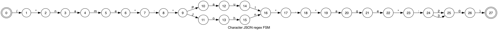
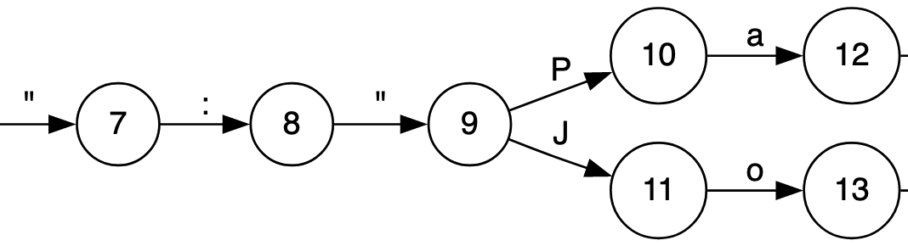
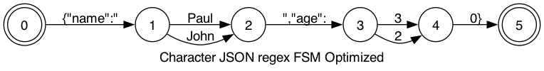
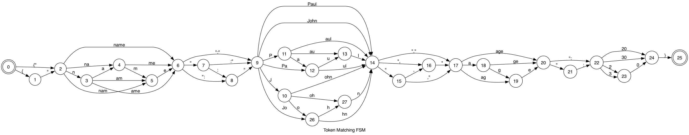
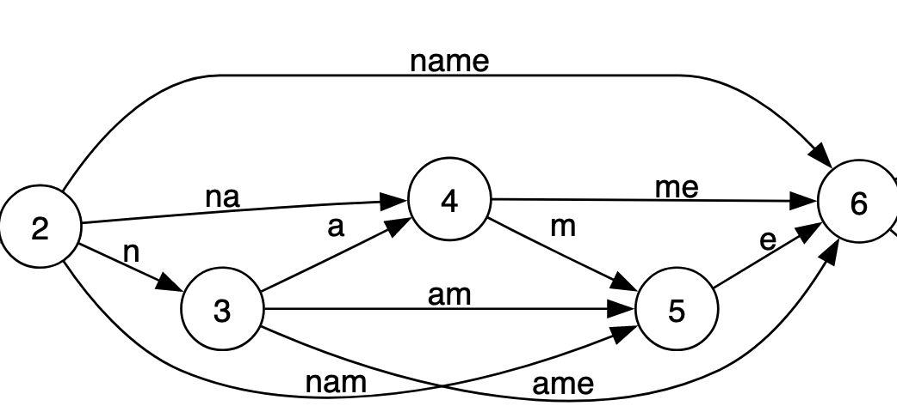
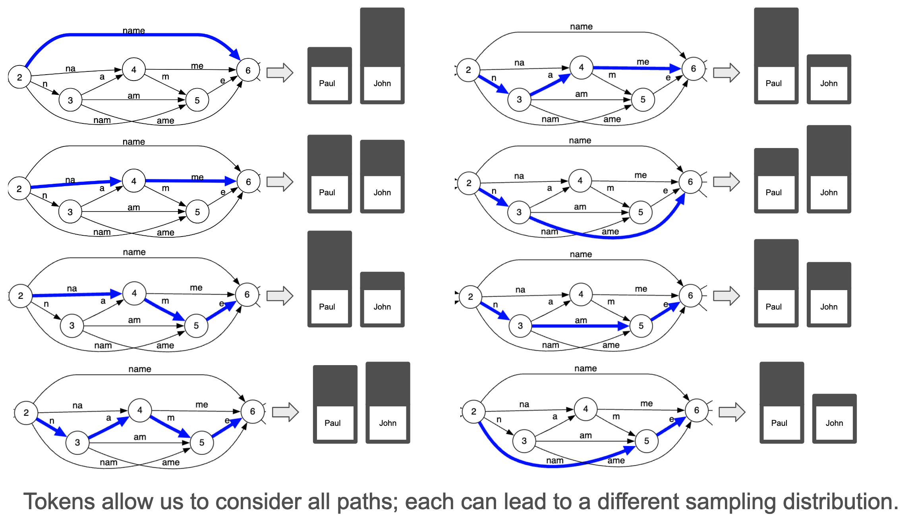

Coalescence: making LLM inference 5x faster
In this post we’re going to explore a surprising property of structured generation when working with Large Language Models (LLMs): generating structured output from an LLM can be significantly faster than generating unstructured text. Specifically we’re going to explore a concept we call “coalescence” in structured generation. Coalescence is a framework for exploiting deterministic structures in our desired output in order to skip expensive and unnecessarily calls to the underlying LLM.
Table of Contents
Structured Generation in Outlines
Outlines allows you to use Large Language Models (LLMs) to output structured text. Being “structured” means that the output is guaranteed to adhere to a desired format such as:
- regular expressions - for example, making sure the output is a valid email address.
- JSON Schema - ensuring you have well formed JSON with the fields you specify to allow easy interoperability with code.
- a Context-Free Grammar - for instance making sure the output is valid SQL
If you have tried Outlines, you already know that it is fast: the method we use for structured generation comes at virtually no cost during inference. Generating structured text is free, taking no more time than vanilla, unstructured generation from the model.
But we, at .txt, did not stop there. In this blog post we will show you how we can improve upon this, and make structured generation dramatically faster than vanilla generation.
Problem: Generating valid JSON
LLMs are a lot more useful if we can reliably use their output in other parts of our programs. Say we want the language model to generate a JSON object that represents a character in a story. Our character needs to have a name and an age, contained in the “name” and “age” fields of the JSON respectively. To simplify the problem for the purpose of this article, we will restrict the number of possible names and ages. Here is how you would define this character using Pydantic:
from enum import Enum from pydantic import BaseModel class Name(str, Enum): john = "John" paul = "Paul" class Age(int, Enum): twenty = 20 thirty = 30 class Character(BaseModel): name: Name age: Age
We can use Outlines to use any open source language model to generate story characters, here’s an example using Mistral-7B-v0.1:
from outlines import models, generate model = models.transformers("mistralai/Mistral-7B-v0.1") generator = generate.json(model, Character) char = generator("Generate a young character named Paul.") print(char) # Character(name:"Paul", age:20)
Using generate.json is just as fast as if you’d let the model generate text freely, except the structure of the output is guaranteed. To understand how we can make this generation substantially faster we need to dive into the internals of Outlines.
Converting JSON to a regular expression
The first step in our process is to transform our JSON schema into a regular expression. As we’ll see in a bit, regular expressions are a big part of making structured generation fast. When you pass a Pydantic object to Outlines it first translates it to a JSON Schema specification:
json_schema = Character.model_json_schema()
json_schema
{'$defs': {'Age': {'enum': [20, 30], 'title': 'Age', 'type': 'integer'},
'Name': {'enum': ['John', 'Paul'], 'title': 'Name', 'type': 'string'}},
'properties': {'name': {'$ref': '#/$defs/Name'},
'age': {'$ref': '#/$defs/Age'}},
'required': ['name', 'age'],
'title': 'Character',
'type': 'object'}
This JSON Schema specification is further transformed into a regular expression. If a string produced by the model matches this regular expression then we know it is valid to the JSON Schema specification, and thus parseable by Pydantic.
Here’s how it works in Outlines:
import outlines.fsm as fsm import json regex_str = fsm.json_schema.build_regex_from_object(json.dumps(json_schema)) regex_str
'\\\\{"name":("John"|"Paul"),"age":(20|30)\\\\}'
Next we’re going to use this regular expression to help us control our structured generation.
Note: Technically, all possible valid JSON schemas cannot be represented with a regular expression, but in most cases approximating with a regular expression is enough.
Translating our JSON regex into a Finite State Machine
The secret behind the speed of structured generation in Outlines is the well-known equivalence between regular expressions and finite-state machines (FSM). To understand how this works, we need to transform our JSON regex into an FSM.
We use the interegular library to perform this translation from the regular expressions that represents JSON Schemas into a Finite-State Machine. Here is a visualization of the the FSM the is output from this process (don’t worry about the details, we’ll zoom in soon):

We can generate valid JSON from this FSM using the following procedure
- Start from state 0.
- Generate one of the allowed transition characters at random.
- Follow the corresponding transition to the new state
- Repeat until you’ve reached one of the FSM’s final states (in this case, only state 27).
Following this procedure, no matter what paths we follow in the FSM, the string you’ve just generated is valid!
At this point we have our JSON represented as an FSM and all we have to do is keep track of our current state and we can control sampling at virtually no additional cost.
Towards Coalescence: Naive Character Merging.
Now we can explore the first pass at improving structured generation using a technique that is a first step towards coalescence. If we look at part of the above FSM something should become immediately obvious:

Look how many of those states only have one possibility for transition! Recall that we’re using the FSM to limit our choices for sampling from the model, the number of transitions out of a state represents the possible values we can sample from. If there is only one value there is no need to sample!
This leads to an obvious optimization: if we compress nodes that have one transition, we can skip that sampling step. This would lead to a new FSM that looks like this:

It looks like we’ve simplified our model a lot and discovered a great method to speed up generation! Unfortunately there is one important part of working with LLMs we’ve left out: LLMs don’t use single characters, but instead use tokens. It turns out this introduces more nuance that can have dramatic consequence on the quality of the generation. Thinking in terms of characters will likely lead us down the wrong path.
LLMs work with Tokens
So far all of our examples have been with regular expression looking at individual characters. This makes for easy examples, but doesn’t quite match up to what’s happening inside an LLM. LLMs are not trained character by character. Instead they use fragments of words (including whole words and individual characters) known as tokens. The above Finite-State Machine is thus not very useful when we try to generate text with an LLM.
Adapting Character Regex to Work with Tokens
Fortunately, it turns out you can deterministically transform this character-based FSM into another FSM that works with tokens instead. The following code gives an example of how this can be accomplished in Outlines:
from outlines.fsm.regex import make_deterministic_fsm, create_fsm_index_tokenizer new_fsm, _ = make_deterministic_fsm(fsm) index, _ = create_fsm_index_tokenizer(new_fsm, tokenizer)
The index object is a dictionary that maps the states of the finite state machines to possible transitions; the transitions are represented as a dictionary that maps the allowed tokens to the next state of the FSM we need to be should we sample this token.
The procedure to generate the first token is:
- Pass the prompt to the model, get the next-token probability distribution.
- Start the FSM in state 0. List all the tokens that correspond to a valid transition with
index[0].keys(). - Use the probability distribution to sample one of these tokens, say
X. - Follow the transition that corresponds to this token and move to the corresponding state with
new_state = index[0]["X"]
Let's take a look at this index, and translate the token ids to tokens to understand what is going on:
index_with_tokens = {} for state, transitions in index.items(): transitions = { tokenizer.tokenizer.decode([key]): value for key, value in transitions.items() } index_with_tokens[state] = transitions for state, transitions in index_with_tokens.items(): print(f"{state}: {transitions}")
0: {'{': 1, '{"': 2}
1: {'"': 2}
2: {'na': 4, 'nam': 5, 'name': 6, 'n': 3}
3: {'a': 4, 'ame': 6, 'am': 5}
4: {'me': 6, 'm': 5}
5: {'e': 6}
6: {'"': 7, '":': 8, '":"': 9}
7: {':': 8, ':"': 9}
8: {'"': 9}
9: {'P': 11, 'Paul': 14, 'Pa': 12, 'J': 10, 'Jo': 26, 'John': 14}
10: {'o': 26, 'oh': 27, 'ohn': 14}
11: {'au': 13, 'a': 12, 'aul': 14}
12: {'ul': 14, 'u': 13}
13: {'l': 14}
14: {'","': 17, '",': 16, '"': 15}
15: {',"': 17, ',': 16}
16: {'"': 17}
17: {'age': 20, 'a': 18, 'ag': 19}
18: {'g': 19, 'ge': 20}
19: {'e': 20}
20: {'"': 21, '":': 22}
21: {':': 22}
22: {'20': 24, '2': 23, '3': 23, '30': 24}
23: {'0': 24}
24: {'}': 25}
26: {'hn': 14, 'h': 27}
27: {'n': 14}
Numbers represent the states of the FSM, and strings the tokens in the model’s vocabulary. We can also visualize this entire FSM, it’s quite a bit more complex than our first one.

Despite this added complexity, walking through this is just as easy as in our original generation example.
It’s essential to note that each transition in our FSM represents a expensive call to the LLM. In vanilla generation all of these calls would also be necessary. Our use of FSMs to represent regular expressions means controlling the output requires virtually no additional cost over vanilla generation. However, we don’t have to settle with simply no added cost: with structured generation we have the potential for much faster generation if we can figure out a way to skip calls to the LLM.
Coalescence
Let us zoom in on the paths from 2→ 6 in the previous image. Each of these transitions represents possible valid sequence of transitions that can lead from stage 2 to stage 6. There are 8 paths in total, but they all result in the same generated string: “name”.

Eight paths to get to the same generation, doesn’t that sound redundant? It does, and these redundancies necessarily occur because of the way tokenizers are trained. This blog post (+ video) are a good introduction to the details for those who are curious. But it suffices to say that if {" is in the vocabulary then { and " necessarily are as well.
A 5x speedup
We can however exploit this structure of the FSM to dramatically accelerate generation: instead of making expensive calls to the LLM for each transition, we can decide instead to append either of the following token words to the currently generated sequence:
- [”name”]
- [”n”, “a”, “m”, “e”]
- [”na”, “m”, “e”]
- [”nam”, “e”]
- [”n”, “am”, “e”]
- [”n”, “ame”]
- [”na”, “me”]
- [”n”, “a”, “me”]
For the sake of simplicity, let’s show what happens if we always append the longest token, or equivalently shortest word. In our toy example (and only!) this translates to the following rule:
When, in a given transition, several tokens share the same prefix, only keep the transition that corresponds to the longest one
Let’s apply this rule by hand and see the result:
simplified_index = { 0: {'{"': 2}, 2: {"name": 6}, 6: {'":"': 9}, 9: {'Paul': 14, 'John': 14}, 14: {'","': 17}, 17: {'age': 20}, 20: {'":': 22}, 22: {'20': 24, '30': 24}, 24: {'}': 25}, }
Out of 9 tokens in the answer, all except two states are single-state transitions. So here we only need to call the model twice, and directly append the other tokens.
That's at least a 5x speedup over structured generation in Outlines, where the model needs to consider every possible transition. Because structured generation in Outlines incurs no additional cost over vanilla generation, this means we ultimate have a 5x speed up over vanilla generation from the model.
What's in a “name”?
All these paths lead to the same string and the same speedup, however they lead to potentially very different states for the LLM when it reaches state 6. That is, the strings are the same, but each path leads to a different conditional probability distribution in stage 6.
Suppose that we are not just interested in generating a random story character, but correctly identifying either “Paul” or “John” for a named entity extraction task. Depending on the token word you choose to append, the subsequent probability of picking either “John” or “Paul” may be completely different:

When we generate text with a Large Language Model, we are sampling from a distribution over possible sequences. The set of all possible sequence (very, very big) is called the support of this distribution. When we do structured generation, we are limiting the support of this distribution since we are forbidding sequences that do not respect the structure. When we make a choice as to which token word to append, we are further restricting the number of possible sequences.
When we optimize the generation process we should always ask ourselves: are we preventing more likely sequences from being generated?
Conclusion
More than speedups, coalescence provides a framework. We still have access to all possible paths, and we still have a choice regarding which we want to append. Used with the right sampling algorithm, coalescence allows us to avoid the pitfalls of simpler, destructive, methods like Guidance’s acceleration or the character-based optimization we introduced above. Furthermore, because we work with tokens we avoid the prompt boundary problem: tokens are only merged when there is no ambiguity.
As experienced Bayesian modelers, the .txt team is well aware that there is often a lot of nuance in correctly sampling from these distributions than it seems at first pass. Properly framing the problem means that as we learn more about the properties of these models we’ll be able to deliver both speed and quality in our results.
Speed is great, less so when it comes at the expense of correctness. At .txt we don't churn out tokens, we engineer them.